Approach: Model Analysis by means of Time Scale Separation
In order to explain the basic notions of time scale decomposition we start with a first-order kinetics system. Then, the differential equations (ODE) describing the system dynamics 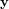 are linear:
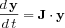
with constant Jacobian 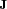. By using the set of right eigenvectors 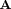 of as the new basis we can decompose the Jacobian [
Golub96]
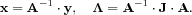
The components of the transformed concentration vector 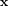 are called
modes. Because 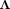 is a diagonal matrix of real or complex eigenvalues 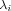 of , the transformed ODE system is fully decoupled:
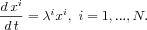
Thus, the modes 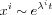 evolve independently of each other. The reciprocals of 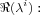
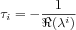
have a dimension of time and are called time scales (TS). Ordering them w.r.t. magnitudes 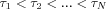 leads to approximate speed ranking of the modes [
Lam93]. The modes corresponding to fast time scales (eigenvalues with large negative real part) approach 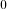 very quickly and can be eliminated from the system for 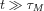, where 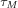 is a fast time scale.
For general nonlinear problems the Jacobian is time-dependent. Its eigenvalues and eigenvectors change with time.
Hence, in order to obtain a reasonable characterization of the systems dynamics the time scale decomposition has to be applied repeatedly at many time points through the evaluation time of the reaction system.
The methods presented here relies on the presence of a wide range of characteristic time-scales in biological systems and are based on the local analysis of the Jacobian, which is partitioned into fast and slow components at the initial point of a user chosen interval.
All the three methods involves numerical integration using the LSODA solver [
Petzold83],
deterministic simulation. The TSSA methods uses Schur transformation and the solution of Sylvester equation [
Golub96] (ILDM and Modified ILDM) performed by
CLAPACK.